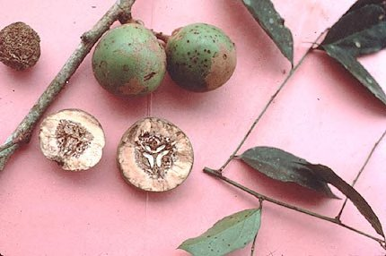
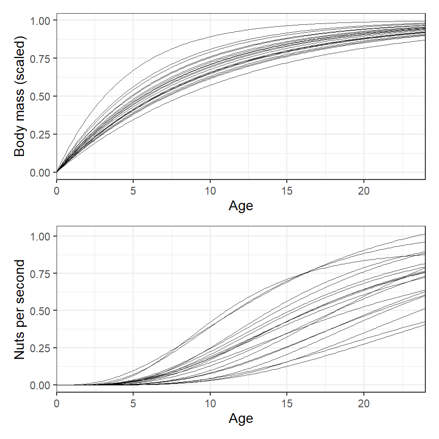
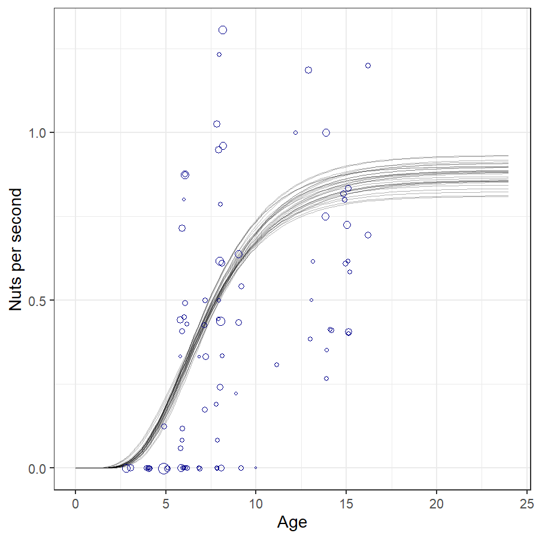
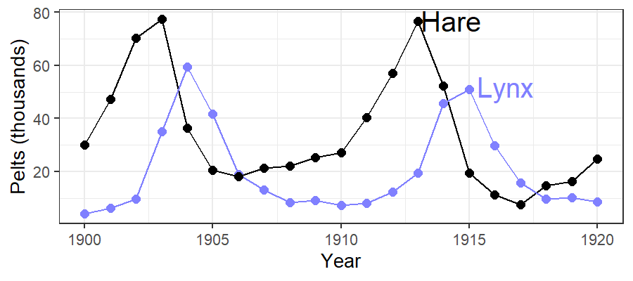
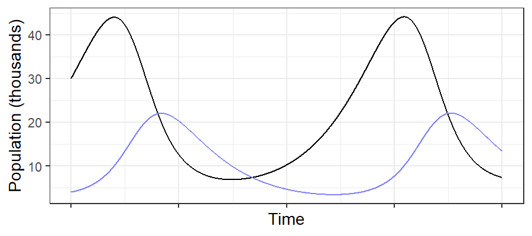
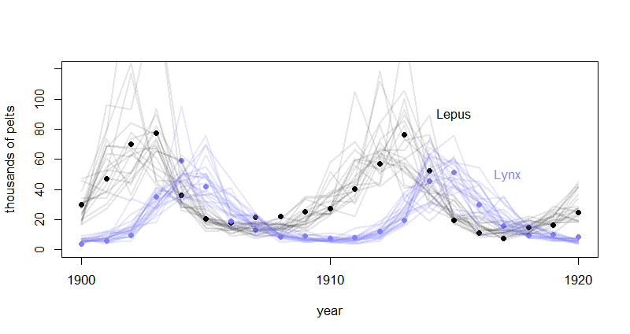
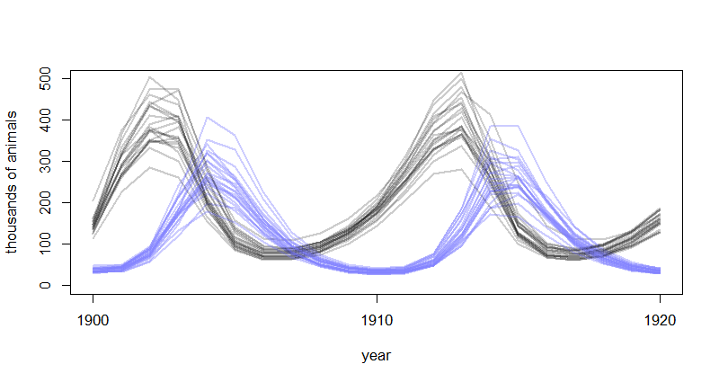

dat_list <- data.frame(
nuts = as.integer(Panda_nuts$nuts_opened),
age = Panda_nuts$age / max(Panda_nuts$age),
seconds = Panda_nuts$seconds)
mdl_nuts <- ulam(
alist(
nuts ~ poisson(lambda),
lambda <- seconds * phi * (1 - exp(-k * age))^theta,
phi ~ lognormal(log(1), 0.1),
k ~ lognormal(log(2), 0.25),
theta ~ lognormal(log(5), 0.25)
), data = dat_list, chains = 4)post <- tidy_draws(mdl_nuts) %>% select(phi, k, theta)
df <- map_df(seq(30), ~tibble(
.idx = .x,
age = seq(0, 1.5, length.out = 100),
nuts = post$phi[.x] * (1 - exp(-post$k[.x] * age))^post$theta[.x]
))
ggplot(df, aes(x = age * max(Panda_nuts$age), y = nuts)) +
geom_line(aes(group = .idx), alpha = 0.3) +
geom_jitter(data = dat_list, aes(y = nuts/seconds,
size = normalize(seconds)),
shape = 1,
color = "darkblue", width = 0.2) +
labs(x = "Age", y = "Nuts per second") +
guides(size = "none")
Hares (prey) and Lynx (predators)
Lynx eat hare
As hare population drops, Lynx don’t have enough food
As lynx population drops, hare population rebounds

sim_lh <- function(n_steps, init, theta, dt = 0.002) {
L <- rep(NA, n_steps)
H <- rep(NA, n_steps)
L[1] <- init[1]
H[1] <- init[2]
for (i in 2:n_steps) {
H[i] <- H[i-1] + dt * H[i-1] * (theta[1] - theta[2] * L[i-1])
L[i] <- L[i-1] + dt * L[i-1] * (theta[3] * H[i-1] - theta[4])
}
return(tibble(H = H, L = L, time = seq_along(H)))
}
\[ \begin{align} h_t &\sim \text{Log-Normal}(\log(p_H H_t), \sigma_H) \\ \ell_t &\sim \text{Log-Normal}(\log(p_L L_t), \sigma_L) \\ H_t &\sim \text{Log-Normal}(\log(10), 1) \\ L_t &\sim \text{Log-Normal}(\log(10), 1) \\ H_{t > 1} &= H_1 + \int_1^T H_t (b_H - m_L L_t) dt \\ L_{t > 1} &= L_1 + \int_1^T L_t (b_L H_t - m_L) dt \end{align} \]
Priors:
\[ \begin{align} \sigma_H &\sim \text{Exponential}(1) \\ \sigma_L &\sim \text{Exponential}(1) \\ p_H &\sim \text{Beta}(\alpha_H, \beta_H) \\ p_L &\sim \text{Beta}(\alpha_L, \beta_L) \\ b_H &\sim \text{Half-Normal}(1, 0.5) \\ b_L &\sim \text{Half-Normal}(0.05, 0.05) \\ m_H &\sim \text{Half-Normal}(0.05, 0.05) \\ m_L &\sim \text{Half-Normal}(1, 0.5) \\ \end{align} \]
## functions {
## real[] dpop_dt( real t, // time
## real[] pop_init, // initial state {lynx, hares}
## real[] theta, // parameters
## real[] x_r, int[] x_i) { // unused
## real L = pop_init[1];
## real H = pop_init[2];
## real bh = theta[1];
## real mh = theta[2];
## real ml = theta[3];
## real bl = theta[4];
## // differential equations
## real dH_dt = (bh - mh * L) * H;
## real dL_dt = (bl * H - ml) * L;
## return { dL_dt , dH_dt };
## }
## }
## data {
## int<lower=0> N; // number of measurement times
## real<lower=0> pelts[N,2]; // measured populations
## }
## transformed data{
## real times_measured[N-1]; // N-1 because first time is initial state
## for ( i in 2:N ) times_measured[i-1] = i;
## }## parameters {
## real<lower=0> theta[4]; // { bh, mh, ml, bl }
## real<lower=0> pop_init[2]; // initial population state
## real<lower=0> sigma[2]; // measurement errors
## real<lower=0,upper=1> p[2]; // trap rate
## }
## transformed parameters {
## real pop[N, 2];
## pop[1,1] = pop_init[1];
## pop[1,2] = pop_init[2];
## pop[2:N,1:2] = integrate_ode_rk45(
## dpop_dt, pop_init, 0, times_measured, theta,
## rep_array(0.0, 0), rep_array(0, 0),
## 1e-5, 1e-3, 5e2);
## }
## model {
## // priors
## theta[{1,3}] ~ normal( 1 , 0.5 ); // bh,ml
## theta[{2,4}] ~ normal( 0.05, 0.05 ); // mh,bl
## sigma ~ exponential( 1 );
## pop_init ~ lognormal( log(10) , 1 );
## p ~ beta(40,200);
## // observation model
## // connect latent population state to observed pelts
## for ( t in 1:N )
## for ( k in 1:2 )
## pelts[t,k] ~ lognormal( log(pop[t,k]*p[k]) , sigma[k] );
## }
## generated quantities {
## real pelts_pred[N,2];
## for ( t in 1:N )
## for ( k in 1:2 )
## pelts_pred[t,k] = lognormal_rng( log(pop[t,k]*p[k]) , sigma[k] );
## }dat_list <- list(
N = nrow(Lynx_Hare),
pelts = Lynx_Hare[,2:3])
mdl_lh <- stan(model_code = Lynx_Hare_model, data = dat_list,
chains = 4, cores = 4, control = list(adapt_delta = 0.95))plot(1:21, pelts[,2], pch=16, ylim=c(0, 120), xlab="year",
ylab="thousands of pelts", xaxt="n")
at <- c(1,11,21)
axis(1, at = at, labels = Lynx_Hare$Year[at])
points(1:21, pelts[,1], col = rangi2, pch = 16)
# 21 time series from posterior
for (s in 1:21) {
lines(1:21, post$pelts_pred[s,,2],
col = col.alpha("black", 0.1), lwd=2)
lines(1:21, post$pelts_pred[s,,1],
col = col.alpha(rangi2, 0.2), lwd=2)
}
# text labels
text(17, 90, "Lepus", pos = 2)
text(19, 50, "Lynx", pos = 2, col = rangi2)plot(NULL, pch = 16, xlim = c(1, 21), ylim = c(0, 500),
xlab="year", ylab = "thousands of animals", xaxt = "n")
at <- c(1,11,21)
axis(1, at = at, labels = Lynx_Hare$Year[at])
for (s in 1:21) {
lines(1:21, post$pop[s,,2], col = col.alpha("black", 0.2),
lwd = 2)
lines(1:21, post$pop[s,,1], col = col.alpha(rangi2, 0.4),
lwd = 2)
}